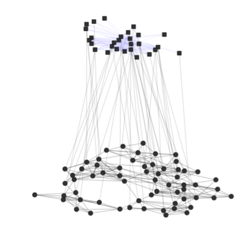

The goal of netmem is to make available different measures to analyse and manipulate complex networks using matrices.
🖊 Author/mantainer: Alejandro Espinosa-Rada
🏫 Social Networks Lab ETH Zürich

The package implements different measures to analyse and manipulate complex multilayer networks, from an ego-centric perspective, considering one-mode networks, valued ties (i.e. weighted or multiplex) or with multiple levels.
Citation
To cite package ‘netmem’ in publications use:
Alejandro Espinosa-Rada (2020). netmem: Social Network Measures using Matrices. R package version 1.0-3. https://github.com/anespinosa/netmem
A BibTeX entry for LaTeX users is
@Manual{, title = {netmem: Social Network Measures using Matrices}, author = {Alejandro Espinosa-Rada}, year = {2020}, note = {R package version 1.0-3}, url = {https://github.com/anespinosa/netmem}, }
All functions
Functions currently available in netmem:
-
clique_table(): Clique table -
co_ocurrence(): Co‐occurrence -
dyad_triad_table(): Forbidden triad table -
dyadic_census(): Dyadic census -
eb_constraint(): Constraint -
ego_net(): Ego network -
ei_index(): Krackhardt and Stern’s E-I index -
fractional_approach(): Fractional approach -
gen_degree(): Generalized degree -
gen_density(): Generalized density -
heterogeneity(): Blau’s and IQV Index -
jaccard(): Jaccard similarity -
k_core(): Generalized K-core -
kp_reciprocity(): Reciprocity of Katz and Powell -
matrix_projection(): Unipartite projections -
matrix_to_edgelist(): Transform symmetric matrix to an edge-list -
mix_matrix(): Mixing matrix -
meta_matrix(): Meta matrix for multilevel networks -
mixed_census(): Multilevel triad and quadrilateral census -
multilevel_degree(): Degree centrality for multilevel networks -
multiplex_census(): Multiplex triad census -
redundancy(): Redundancy measures -
posneg_index(): Positive-negative centrality -
struc_balance(): Structural balance -
structural_na(): Structural missing data -
trans_coef(): Transitivity -
triad_uman(): Triad census analysis assuming U|MAN -
z_arctest(): Z test of the number of arcs -
zone_sample(): Zone-2 sampling from second-mode
Data currently available in netmem:
-
FIFAego: Ego FIFA -
FIFAex: Outside FIFA -
FIFAin: Inside FIFA -
krackhardt_friends: Krackhardt friends -
lazega_lawfirm: Lazega Law Firm
Additional data in classicnets: Classic Data of Social Networks
Installation
You can install the development version from GitHub with:
# install.packages("devtools")
devtools::install_github("anespinosa/netmem")Multilevel Networks
Connections between individuals are often embedded in complex structures, which shape actors’ expectations, behaviours and outcomes over time. These structures can themselves be interdependent and exist at different levels. Multilevel networks are a means by which we can represent this complex system by using nodes and edges of different types. Check this book edited by Emmanuel Lazega and Tom A.B. Snijders or this book edited by David Knoke, Mario Diani, James Hollway and Dimitris Christopoulos.

For multilevel structures, we tend to collect the data in different matrices representing the variation of ties within and between levels. Often, we describe the connection between actors as an adjacency matrix and the relations between levels through incident matrices. The comfortable combination of these matrices into a common structure would represent the multilevel network that could be highly complex.
Example
Let’s assume that we have a multilevel network with two adjacency matrices, one valued matrix and two incident matrices between them.
-
A1: Adjacency Matrix of the level 1 -
B1: Incident Matrix between level 1 and level 2 -
A2: Adjacency Matrix of the level 2 -
B2: Incident Matrix between level 2 and level 3 -
A3: Valued Matrix of the level 3
Create the data
A1 <- matrix(c(0,1,0,0,1,
1,0,0,1,1,
0,0,0,1,1,
0,1,1,0,1,
1,1,1,1,0), byrow=TRUE, ncol=5)
B1 <- matrix(c(1,0,0,
1,1,0,
0,1,0,
0,1,0,
0,1,1), byrow=TRUE, ncol=3)
A2 <- matrix(c(0,1,1,
1,0,0,
1,0,0), byrow=TRUE, nrow=3)
B2 <- matrix(c(1,1,0,0,
0,0,1,0,
0,0,1,1), byrow=TRUE, ncol=4)
A3 <- matrix(c(0,1,3,1,
1,0,0,0,
3,0,0,5,
1,0,5,0), byrow=TRUE, ncol=4)What is the density of some of the matrices?
matrices <- list(A1, B1, A2, B2)
gen_density(matrices, multilayer = TRUE)
#> $`Density of matrix [[1]]`
#> [1] 0.7
#>
#> $`Density of matrix [[2]]`
#> [1] 0.4666667
#>
#> $`Density of matrix [[3]]`
#> [1] 0.6666667
#>
#> $`Density of matrix [[4]]`
#> [1] 0.4166667How about the degree centrality of the entire structure?
multilevel_degree(A1, B1, A2, B2, complete = TRUE)
#> multilevel bipartiteB1 bipartiteB2 tripartiteB1B2 low_multilevel
#> n1 3 1 NA 1 3
#> n2 5 2 NA 2 5
#> n3 3 1 NA 1 3
#> n4 4 1 NA 1 4
#> n5 6 2 NA 2 6
#> m1 6 2 2 4 4
#> m2 6 4 1 5 5
#> m3 4 1 2 3 3
#> k1 4 NA 1 1 1
#> k2 2 NA 1 1 1
#> k3 3 NA 2 2 2
#> k4 1 NA 1 1 1
#> meso_multilevel high_multilevel
#> n1 1 1
#> n2 2 2
#> n3 1 1
#> n4 1 1
#> n5 2 2
#> m1 6 4
#> m2 6 5
#> m3 4 3
#> k1 1 1
#> k2 1 1
#> k3 2 2
#> k4 1 1Besides, we can perform a k-core analysis of one of the levels using the information of an incident matrix
k_core(A1, B1, multilevel=TRUE)
#> [1] 1 3 1 2 3This package also allows performing complex census for multilevel networks.
mixed_census(A2, t(B1), B2, quad=TRUE)
#> 000 100 001 010 020 200 11D0 11U0 120 210 220 002 01D1
#> 2 6 1 0 0 2 0 0 4 0 1 1 0
#> 01U1 012 021 022 101N 101P 201 102 202 11D1W 11U1P 11D1P 11U1W
#> 0 0 8 0 3 0 1 3 1 0 0 0 0
#> 121W 121P 21D1 21U1 11D2 11U2 221 122 212 222
#> 11 13 0 0 0 0 3 0 0 0Ego measures
When we are interested in one particular actor, we could perform different network measures. For example, actor e has connections with all the other actors in the network. Therefore, we could estimate some of Ronald Burt’s measures.
# First we will assign names to the matrix
rownames(A1) <- letters[1:nrow(A1)]
colnames(A1) <- letters[1:ncol(A1)]
eb_constraint(A1, ego = "e")
#> $results
#> term1 term2 term3 constraint normalization
#> e 0.25 0.292 0.101 0.642 0.761
#>
#> $maximum
#> e
#> 0.766
redundancy(A1, ego = "e")
#> $redundancy
#> [1] 1.5
#>
#> $effective_size
#> [1] 2.5
#>
#> $efficiency
#> [1] 0.625Also, sometimes we might want to subset a group of actors surrounding an ego.
ego_net(A1, ego = "e")
#> a b c d
#> a 0 1 0 0
#> b 1 0 0 1
#> c 0 0 0 1
#> d 0 1 1 0One-mode network
This package expand some measures for one-mode networks, such as the generalized degree centrality. Suppose we consider a valued matrix A3. If alpha=0 then it would only count the direct connections. But, adding the tuning parameter alpha=0.5 would determine the relative importance of the number of ties compared to tie weights.
gen_degree(A3, digraph = FALSE, weighted=TRUE)
#> [1] 3.872983 1.000000 4.000000 3.464102Also, we could conduct some exploratory analysis using the normalized degree of an incident matrix.
gen_degree(B1, bipartite = TRUE, normalized=TRUE)
#> $bipartiteL1
#> [1] 0.3333333 0.6666667 0.3333333 0.3333333 0.6666667
#>
#> $bipartiteL2
#> [1] 0.4 0.8 0.2This package also implement some dyadic analysis
# Dyadic census
dyadic_census(A1)
#> Mutual Asymmetrics Nulls
#> 7 0 3
# Katz and Powell reciprocity
kp_reciprocity(A1)
#> [1] 6.333333
# Z test of the number of arcs
z_arctest(A1)
#> z p
#> 1.789 0.074We can also check the triad census assuming conditional uniform distribution considering different types of dyads (U|MAN)
triad_uman(A1)
#> label OBS EXP VAR STD
#> 1 003 0 0.083 0.076 0.276
#> 2 012 0 0.000 0.000 0.000
#> 3 102 2 1.750 0.688 0.829
#> 4 021D 0 0.000 0.000 0.000
#> 5 021U 0 0.000 0.000 0.000
#> 6 021C 0 0.000 0.000 0.000
#> 7 111D 0 0.000 0.000 0.000
#> 8 111U 0 0.000 0.000 0.000
#> 9 030T 0 0.000 0.000 0.000
#> 10 030C 0 0.000 0.000 0.000
#> 11 201 5 5.250 1.688 1.299
#> 12 120D 0 0.000 0.000 0.000
#> 13 120U 0 0.000 0.000 0.000
#> 14 120C 0 0.000 0.000 0.000
#> 15 210 0 0.000 0.000 0.000
#> 16 300 3 2.917 0.410 0.640Code of conduct
Please note that this project is released with a Contributor Code of Conduct. By participating in this project you agree to abide by its terms.